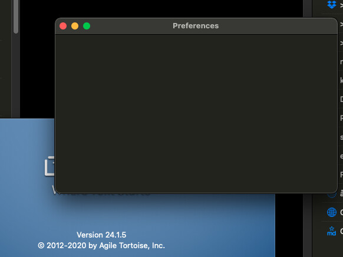

I am sure there were preferences to change … Restarting the App, rebooting the Mac … and still no preferences.

I’m trying to make sense of this…it’s affecting a random assortment of people, and doesn’t seem to be specific to OS version or similar. Of course, I also cannot reproduce on any of my many Macs or Virtual Machines…which makes it tricky to troubleshoot.
I am speculating it an auto-layout issue with some of the new global keyboard shortcut controls changed in this last update. I’ve uploaded a beta build with some attempts to workaround the issue. I’d appreciate some feedback if anyone seeing this issue could download and try this build (It’s otherwise unchanged).
1 Like
No, this doesn’t help (see screenshot).
Thomas!

Bummer.
OK…brainstorming…anyone seeing this issue please chime in:
- Are you running any other software tools that manipulate the Mac UI, windows, the like? Possible this is a conflict of some sort with another app.
- Have you changed any significant OS preferences that affect appearance and might be related?
- If you have another user account on the machine that doesn’t run any of these things, does it happen there, too?
This one works for me! Thanks a lot.
Thomas
2 Likes
Here also - thanks Greg!
1 Like
Thanks for the confirmations. I’ll get a quick fix uploaded to the App Store today.
1 Like
Works fine here with the beta build.
macosxguru
1 Like
Also struck this problem and fixed by beta. Thanks. For the record, I had customised the hotkeys – whether that had anything to do with it.
The fix for this is in the App Store now. v24.1.10 (Just released, may take an hour or two to show up for everyone).
1 Like